Práctica 3: Señales en Tiempo Continuo
Contents
Integrantes
Flores Lima José Ricardo
Medina Bautista Sergio Cristian
Plata Montejano Lissete
Objetivos
- Manipulación básica de MATLAB
- Gráficas de señales reales y complejas continuas
- Transformación de señales continuas (escalamientos y traslaciones)
- Calculo de energía y potencia de señales continuas
Introducción
Matlab es un lenguaje de programación dedicado al cálculo matemático y técnico. Su desarrollo comienza en los años 70 por Cleve Moler, quién buscaba una forma simple al acceso del software matricial desarrollado en UNIX LINPACK (de LINear equations PACKage) y EISPACK (de EIgenvalue Subroutines PACKage). El continuar con el proyecto de MATrix LABoratory (MATLAB) lo llevo a fundar MathWorks, empresa que hoy en día continúa construyendo las diferentes herramientas que usa Matlab para sus cálculos curso. Regularmente se menciona la necesidad de comprar la licencia para hacer uso de Matlab como una de sus principales desventajas.
Si requerimos la misma funcionalidad y operaciones que Matlab, podemos recurrir a Octave. Octave fue desarrollada con el objetivo de ser parecido a Matlab, es por eso que, en general, su motor de funcionamiento es el mismo. De manera que puedes trabajar en Octave de la misma forma en que lo harías en Matlaba, teniendo solo algunas variantes en sintaxis curso.
Python se desarrolla bajo una licencia de código abierto aprobada por OSI, por lo que se puede usar y distribuir libremente, incluso para uso comercial. Python es una herramienta que puede ser utilizada en diferentes contextos, solo requieres de utilizar las bibliotecas necesarias y conocer la sintaxis. Si bien, puramente no tienes el mismo nivel de operacionalidad que en Matlab, utilizando librerías como, puedes darle un uso bastante parecido. Además de que nativamente contiene alta funcionalidad en crear gráficas y cosas así. Quizá una de las desventajas es que no existe una “columna” de donde puedas tomar la funcionalidad que necesitas, de manera que si necesitas implementar algo puede que la documentación sea escaza cursos.1
Fun1
Función que recibe como parametros 'a' y 'w', regresa la evaluación de la función 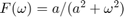
function [F] = fun1 (w, a) F = a./(a.^2 + w.^2); end
Función que grafique de
Grafica de la función 1/(1^2+w^2)
syms w
grafReal(1/(1^2+w^2), w, -2, 2)
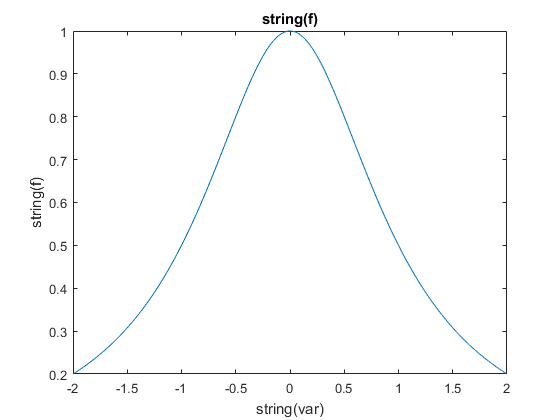 Función que grafique de
Grafica de la transformada de Fourier
syms t
grafComplejo( fourier(exp(-2*t)*heaviside(t)), w, -10, 10)
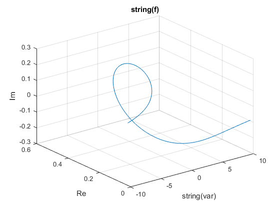 Grafica de f(t)
grafReal(exp(-2*t)*heaviside(t), t, -1, 5)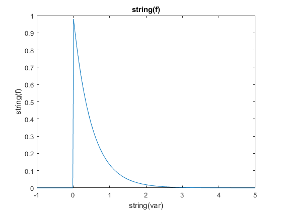
Espectro de Magnitud
grafReal( abs(fourier(exp(-2*t)*heaviside(t))), w, -10, 10)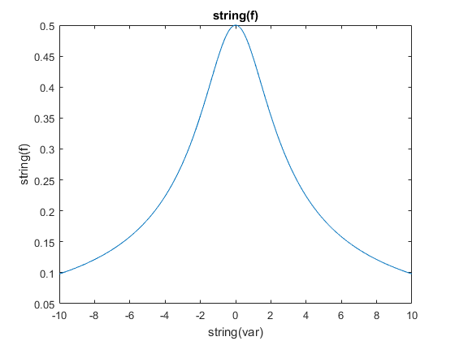
Espectro de Fase
grafReal( angle(fourier(exp(-2*t)*heaviside(t))), w, -10, 10)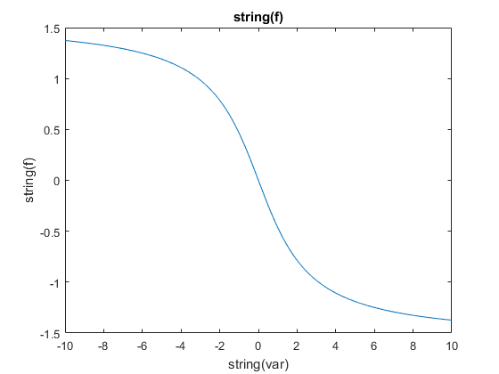
Operaciones de la sección M1.1 a M1.4 del Lathi
M1.1 Inline Functions
f=@(t) exp(-t).*cos(2*pi*t) f(0) t = (-2:2); f(t) figure plot(t,f(t)); xlabel('t'); ylabel('f(t)'); grid ; figure t = (-2:0.01:2); plot (t,f(t)); xlabel('t'); ylabel('f(t)'); grid ;
f =
function_handle with value:
@(t)exp(-t).*cos(2*pi*t)
ans =
1
ans =
7.3891 2.7183 1.0000 0.3679 0.1353
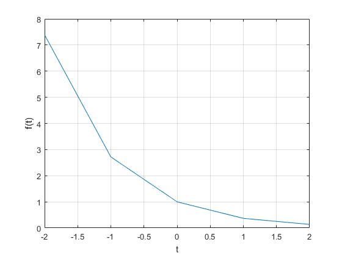 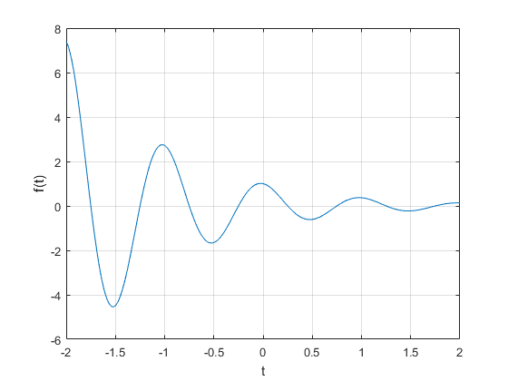 M1.2 Relational Operators and the Unit Step Function
u =@(t) t>=0 figure t = (-2:2); plot (t,u(t)); xlabel('t'); ylabel('u(t)'); grid ; figure () t = (-2:0.01:2); plot (t,u(t)); xlabel('t'); ylabel('u(t)'); axis ([-2 2 -0.1 1.1]); figure () p = @(t) (t>=0) & (t<1); t = (-1:0.01:2); plot(t,p(t)); xlabel('t'); ylabel('p(t) = u(t)-u(t-1)'); axis ([-1 2 -.1 1.1]);
u =
function_handle with value:
@(t)t>=0
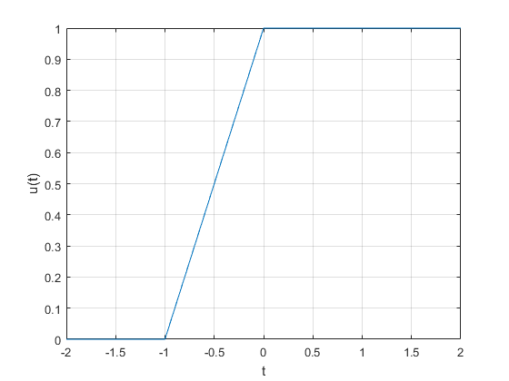 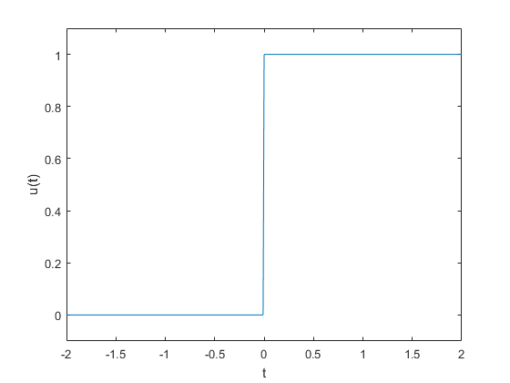 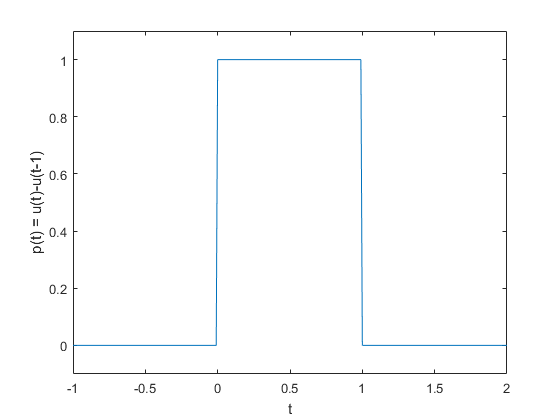 M1.3 Visualizing Operations on the Independent Variable
g =@(t) exp(-t).*cos(2*pi*t).*(t>=0) figure () t = (-2:0.01:2); plot(t,g(2*t+1)); xlabel('t'); ylabel('g(2t+1)')'; grid; figure () plot(t,g(-t+1)); xlabel('t'); ylabel('g(-t+1)')'; grid; figure () plot(t,g(2*t+1) +g(-t+1)); xlabel('t'); ylabel('h(t)')'; grid;
g =
function_handle with value:
@(t)exp(-t).*cos(2*pi*t).*(t>=0)
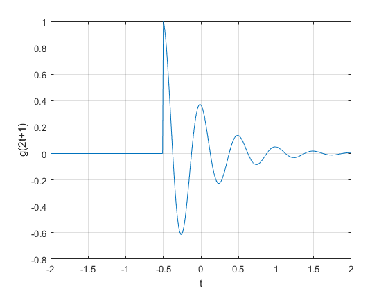 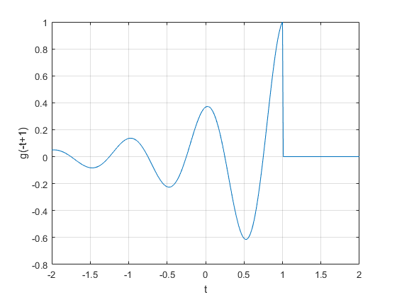 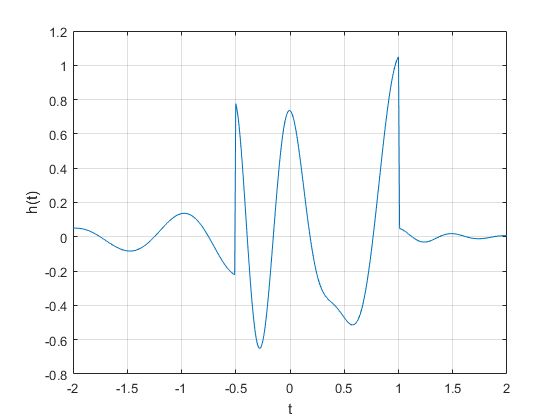 M1.4 Numerical Integration and Estimating Signal Energy
x = @(t) exp(-t).*((t>=0)&(t<1)); t = (0:0.01:1); E_x= sum(x(t).*(x(t).*0.01)) t = (0:0.01:1); integral =@(t) exp(-2*t).*((t>=0)&(t<1)); Ef= quad(integral,0,1) g_squared =@(t) exp(-2*t).*(cos(2*pi*t).^2).*(t>=0); t = (0:0.001:100); E_g = sum(g_squared(t)*0.001) E_g2 = quad(g_squared, 0,100)
E_x =
0.4367
Ef =
0.4323
E_g =
0.2567
E_g2 =
0.2562
Problema 1.2.2 Lathi
For the signal x(t), sketch
- x(t - 4)
- x(t / 1.5)
- x(- t)
- x(2t - 4)
- x(2 - t)
x=@(t) -t.*(t>=-4 & t<0)+ t.*(t>=0 & t<2); figure () t = (-5:0.001:3); plot (t,x(t)); grid on ; axis([-6 5 -1 6]); ax=gca; ax.XAxisLocation = 'origin'; ax.YAxisLocation = 'origin'; ax.Box='off'; title('grafica de las señales f(t)=-t(u(t+4)-u(t))+t(u(t)-u(t-2))') figure () t = (-10:0.001:10); plot (t,x(t-4)); grid on ; axis([-2 7 -1 6]); ax=gca; ax.XAxisLocation = 'origin'; ax.YAxisLocation = 'origin'; ax.Box='off'; title('grafica de las señales f(t-4)') figure () t = (-10:0.001:10); plot (t,x(t/1.5)); grid on ; axis([-9 7 -1 6]); ax=gca; ax.XAxisLocation = 'origin'; ax.YAxisLocation = 'origin'; ax.Box='off'; title('grafica de las señales f(t/1.5)') figure () t = (-10:0.001:10); plot (t,x(-t)); grid on ; axis([-4 5 -1 6]); ax=gca; ax.XAxisLocation = 'origin'; ax.YAxisLocation = 'origin'; ax.Box='off'; title('grafica de las señales f(-t)') figure () t = (-10:0.001:10); plot (t,x(2.*t-4)); grid on ; axis([-1 4 -1 6]); ax=gca; ax.XAxisLocation = 'origin'; ax.YAxisLocation = 'origin'; ax.Box='off'; title('grafica de las señales f(2t-4)') figure () t = (-10:0.001:10); plot (t,x(2-t)); grid on ; axis([-1 8 -1 6]); ax=gca; ax.XAxisLocation = 'origin'; ax.YAxisLocation = 'origin'; ax.Box='off'; title('grafica de las señales f(2-t)')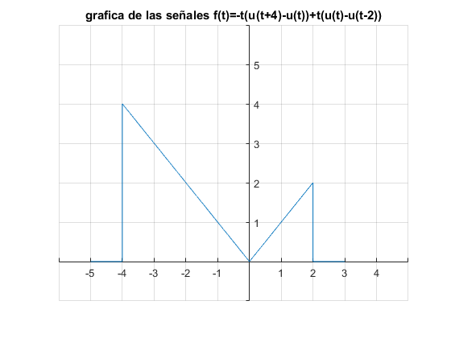 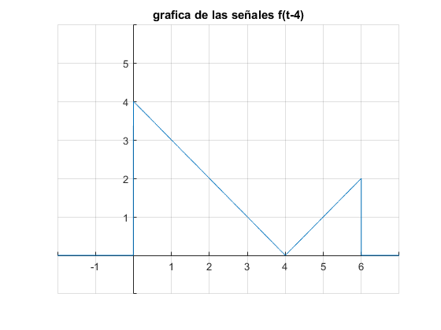 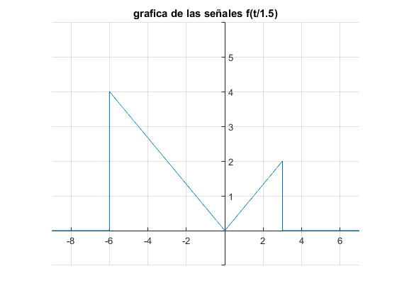 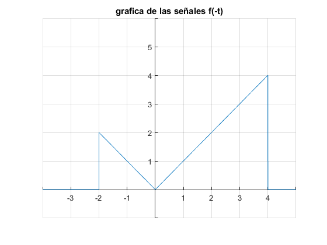 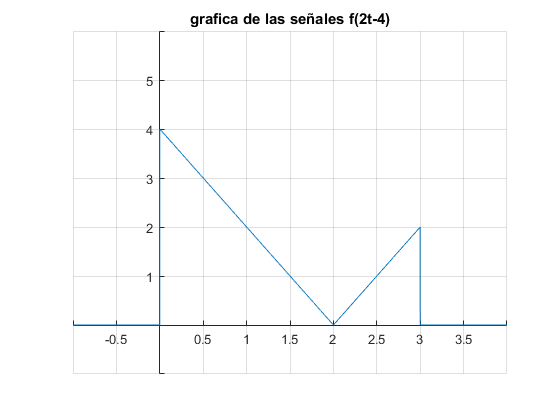 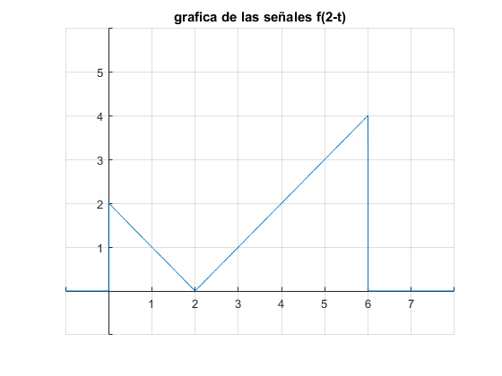
Función de Energía
function [energiafinal] = calculoenergia(funcion,vdeint,a,b) energiafinal=limit(int(funcion^{2},vdeint,a,b),vdeint,inf) end
Problema 1.1.3 Lathi a) Find the energies of signals x(t) + y(t).
syms x;
calculoenergia(heaviside(x),x,0,2)+calculoenergia(heaviside(x)-2*heaviside(x-1),x,0,2)
ans = 4
Problema 1.1.3 Lathi b) Find the energies of signals and x(t) ? y(t).
calculoenergia(heaviside(x),x,0,2)-calculoenergia(heaviside(x)-2*heaviside(x-1),x,0,2)
ans = 0
Función de Potencia
function [potenciafinal] = calculopotencia(funcion,vdeint,a,b) potenciafinal=(1/(a-b))*limit(int(funcion^{2},vdeint,b,a),vdeint,inf) end
Problema 1.1.4 Lathi Find the power of the periodic signal x(t)
calculopotencia(x^(3),x,-2,2)
ans = 64/7